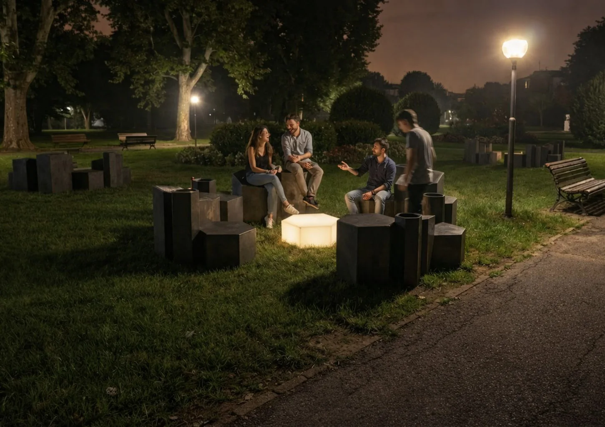
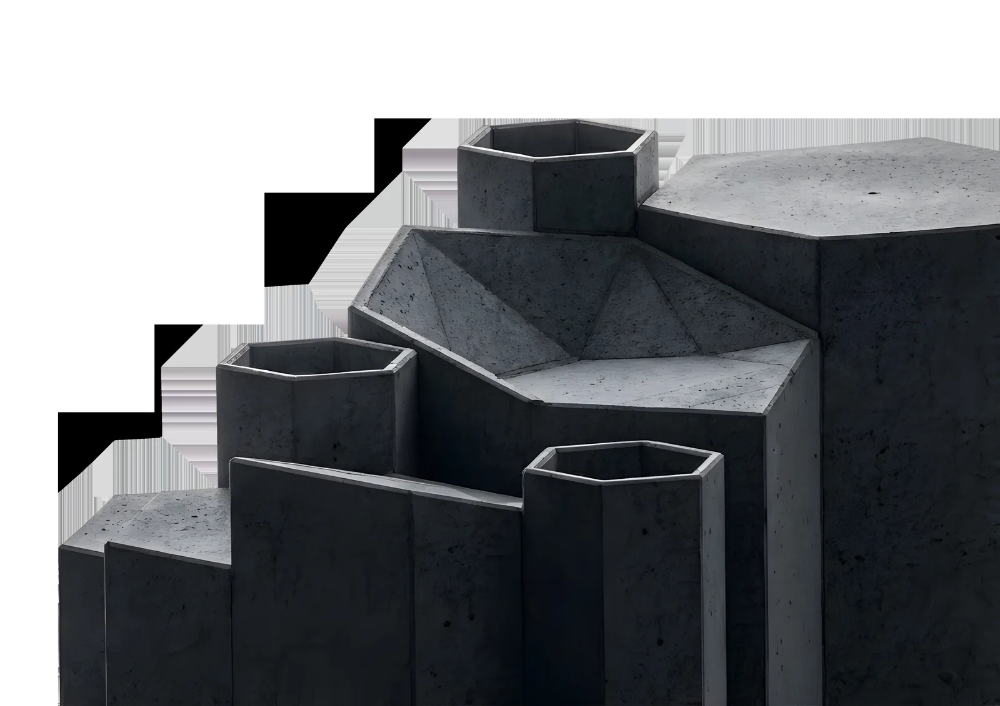
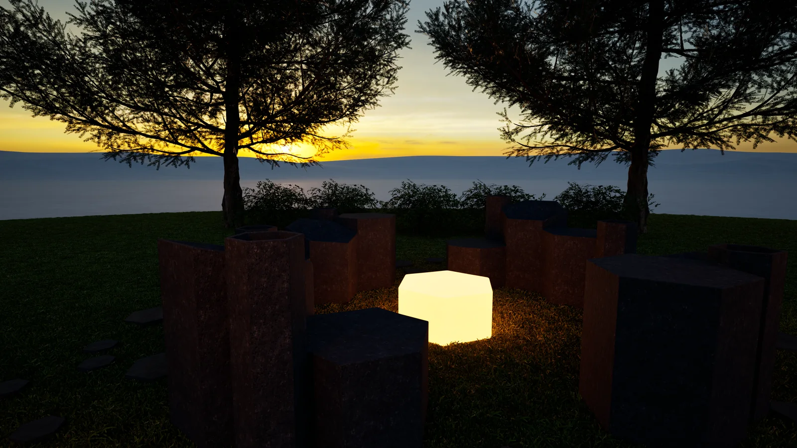
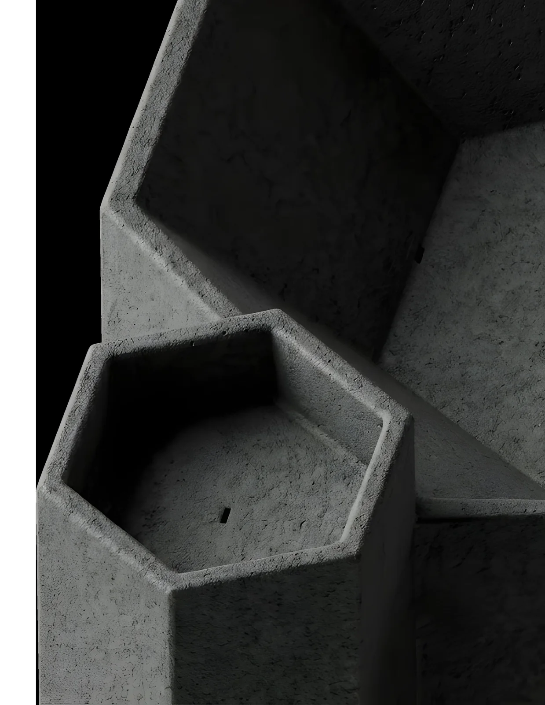
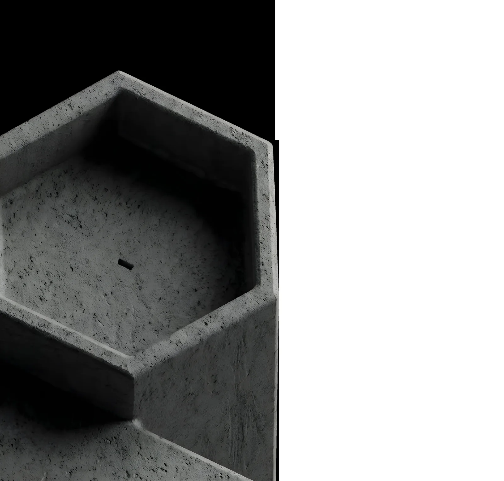

POLIEDRO
Una geometria. Molti modi di stare insieme.
- Corso
- Laboratorio di sintesi finale
- Sede
- Politecnico di Milano · A.A. 2025/26
- Sistema
- Sedute modulari e illuminazione
- Materiali
- Calcestruzzo · policarbonato
- Gruppo
- Filippo Antonio Visentin, Lawrence Sedra, Anna Varsavia, Nina Rosa Patanè
- Ambito
- Product design · Arredo urbano · 2026
- Collegato
- A MATTER OF PRESENCE →

Come dare forma a un incontro senza decidere come debba avvenire?
Parto dalle persone e dalle distanze tra loro. Il modulo è uno strumento per lasciare spazio a relazioni diverse.
Un sistema di sedute modulari in calcestruzzo che costruisce luoghi di relazione. La matrice esagonale permette aggregazioni aperte, mentre una lampada trasforma il centro della composizione in un punto d’incontro.
Altezze, cavità e appoggi differenziano l’uso mantenendo una famiglia formale comune. La luce introduce un secondo tempo di vita dello spazio pubblico. L’allestimento A matter of presence sviluppa il racconto spaziale di questa ricerca.
Piccole isole sociali
POLIEDRO nasce per favorire l’interazione tra giovani nello spazio pubblico. Una panca e un elemento doppio si aggregano in configurazioni flessibili: la disposizione invita alla sosta senza imporre un unico modo di sedersi o di stare in gruppo.


La geometria diventa uso
La matrice esagonale costruisce una famiglia di volumi. Altezze differenti, superfici di appoggio e cavità articolano il sistema in sedute e punti di relazione. I dettagli mettono in evidenza gli spessori, le inclinazioni e gli accorgimenti per il drenaggio.
Una luce per prolungare la sosta
La lampada completa l’isola sociale e introduce un centro luminoso. Il progetto accosta la massa del calcestruzzo a un corpo diffusore in policarbonato. A matter of presence porta lo stesso sistema in una dimensione espositiva, dove riflessi e penombra amplificano la percezione della materia.

Processo — fotografie
2 fotografie
F.04Seduta — cavità e raccordi 
F.05Seduta — geometria e drenaggio